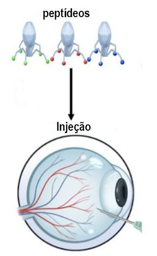

Terapia gênica
Neste site iremos discutir um pouco sobre o tema Terapia Gênica. Tá! Mas o que é Terapia Gênica? Antes de tudo, sabemos que em nossas células há um núcleo onde encontramos os nossos materiais genéticos. Os genes são partes do DNA que cada ser humano tem e ele é responsável por caracterizar todos nós através das duas cópias obtidas dos nossos pais. Porém pode ocorrer alguma mutação em algum gene do nosso organismo ou até alguma característica genética herdada. Então,é aí que entra o nosso alvo: TERAPIA GÊNICA.
(Figura dos cromossomos)
A terapia gênica é um procedimento que tem como objetivo introduzir genes saudáveis(gene terapêutico) para serem modificados ou substituídos em organismos com a presença de algum gene defeituoso ou com alguma mutação genética.
(Representação da terapia gênica)
Essa terapia é nova e já foi testada no ano de 1990 nos Estados Unidos,mas através dos avanços, em 2020 o registro do primeiro tratamento foi autorizado para o uso dessa tecnologia com o intuito de tratar certas doenças no Brasil,mas que ainda não há casos de testes, apenas pesquisas.
Como é o gene é introduzido
Para que o gene seja introduzido, é necessário que algum transportador envie-o ao organismo. Eles são chamados de vetor que podem ser vírus(manipulados para retirar as características ofensivas), pois eles têm a função de entrar nas células e colocar o material genético, ou os vetores nanoestruturados que são os polímeros. Esse transporte ocorre de duas formas: ex vivo e in vivo . A forma Ex vivo funciona com o intuito de retirar uma célula e isolá-la para haver a modificação nos laboratórios. Assim que o tratamento externo for feito, é inserida novamente ao paciente. Já a forma In vivo tem como base introduzir diretamente o vetor no paciente, porém precisa que o vírus seja encaminhado ao organismo correto.
Tipos de terapia gênica
Além disso, existem dois tipos de terapia gênica: técnica germinativa que consiste na terapia germinal onde as células reprodutivas serão utilizadas causando genomas nas futuras células e a Técnica somática que o gene é introduzido em uma célula somática o qual não será repassado.
Terapia gênica e nanotecnologia caminhando juntas
Tá! Mas o que a terapia gênica tem a ver com a nanotecnologia? Através dos avanços tecnológicos, é claro que a terapia gênica não ficará de fora,né?! De acordo com a notícia da NANOEACH, publicada no dia 25 de junho de 2023 , um novo estudo mostrou o potencial da nanotecnologia na terapia gênica no tratamento da cegueira. A partir desse estudo, uma nova tese que utiliza nanopartículas no tratamento da cegueira, foi apresentada.
(Figura da aplicação das nanopartículas lipídicas)
Assista o vídeo abaixo para entender mais sobre a Terapia gênica:
Para mais informações, acesse: